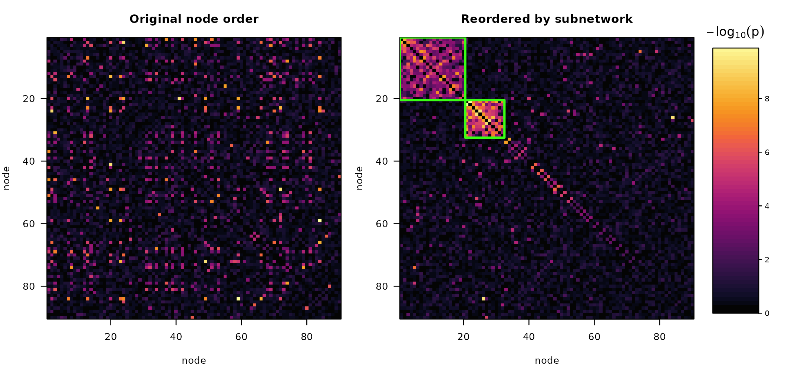

More than one subnetwork
Nothing in the method assumes a single subnetwork. A predictor may be
associated with several distinct systems at once, and
subnet() returns each of them separately, with its own
p-value. This article covers what that looks like, how multiplicity is
handled across them, and where the approach runs out.
We plant two subnetworks of different sizes carrying different
effects in a 90-node connectome. simulate_fc() recycles
f2 across cluster_size, so each subnetwork
gets its own effect size.
sim <- simulate_fc(n = 150, n_nodes = 90, cluster_size = c(20, 12),
f2 = c(0.08, 0.14), seed = 4)
lengths(sim$truth$nodes)
#> [1] 20 12Node labels are shuffled, so neither block sits conveniently in the corner of the matrix.
Detection
fit <- subnet(sim$W, n_perm = 999, seed = 2)
fit
#> Predictor-associated subnetworks
#>
#> nodes : 90 edges: 4005
#> objective : generalized (lambda = 0.50)
#> threshold : 1.492 (10.0% of edges retained)
#> permutations: 999 alpha: 0.05
#> tuning : calibrated criterion
#>
#> subnet size edges density p_value significant log10_stat
#> 1 20 161 0.847 0.001 TRUE -128.1
#> 2 12 59 0.894 0.001 TRUE -50.4
#> 3 8 12 0.429 0.676 FALSE -5.2
#> 4 11 11 0.200 1.000 FALSE -1.7
#> 5 8 7 0.250 1.000 FALSE -1.7
#> 6 7 5 0.238 1.000 FALSE -1.3
#> 7 9 6 0.167 1.000 FALSE -0.8
#>
#> 2 of 7 subnetworks significant at FWER 0.05.
#> P-values are max-statistic permutation p-values and are already
#> family-wise-error corrected; do not adjust them again.Both planted subnetworks come back as separate blocks, and both are significant. The remaining blocks are what greedy peeling always produces from leftover noise — the densest block of a random graph is still a block — and the test correctly declines to call them.
Checking against the truth:
for (k in seq_along(sim$truth$nodes)) {
d <- vapply(fit$subnetworks, dice, numeric(1), b = sim$truth$nodes[[k]])
best <- which.max(d)
cat(sprintf("planted %d (size %2d): block #%d, Dice = %.2f, p = %.4f\n",
k, length(sim$truth$nodes[[k]]), best, d[best],
fit$p_value[best]))
}
#> planted 1 (size 20): block #1, Dice = 1.00, p = 0.0010
#> planted 2 (size 12): block #2, Dice = 1.00, p = 0.0010The two panels below show why reordering matters. On the left the structure is spread across arbitrary node indices and invisible; on the right both blocks sit on the diagonal, outlined.
plot(fit, what = "both")
Blocks are disjoint by construction
Extraction partitions the node set. Each round pulls out the densest core and hands the peeled-off nodes to the next round, so a node can only ever land in one block.
sn <- fit$subnetworks
sum(vapply(seq_along(sn), function(i) {
if (i == length(sn)) return(0L)
sum(vapply(sn[(i + 1):length(sn)], function(o) length(intersect(sn[[i]], o)),
integer(1)))
}, integer(1)))
#> [1] 0
anyDuplicated(unlist(fit$partition$blocks))
#> [1] 0Because every node has exactly one home, membership is a single label per node:
table(membership(fit))
#>
#> 0 1 2
#> 58 20 120 is the background.
membership(fit, significant_only = FALSE) labels every
extracted block instead of only the significant ones.
Multiplicity is already handled
There is no extra correction to apply when several subnetworks are reported. Each permutation reruns the entire extraction and records the single most extreme block it produced anywhere in the graph; every observed block is then compared against that distribution of maxima. This is the Westfall-Young max-statistic construction, so the p-values control the family-wise error rate jointly across all blocks returned — including the ones that fell short.
as.data.frame(fit)[, c("subnet", "size", "density", "p_value", "significant")]
#> subnet size density p_value significant
#> 1 1 20 0.8473684 0.001 TRUE
#> 2 2 12 0.8939394 0.001 TRUE
#> 3 3 8 0.4285714 0.676 FALSE
#> 4 4 11 0.2000000 1.000 FALSE
#> 5 5 8 0.2500000 1.000 FALSE
#> 6 6 7 0.2380952 1.000 FALSE
#> 7 7 9 0.1666667 1.000 FALSEReporting two significant subnetworks out of seven extracted costs no
additional multiplicity budget. Do not pass these p-values through
p.adjust().
The null is conservative when signal is strong
Each block is tested against pi0, the supra-threshold
edge rate across the whole graph. That rate is computed from the
observed data, so it includes the signal edges, which makes it
larger than the rate among genuinely null edges.
wv <- vech(fit$W)
K <- sum(wv >= fit$threshold) # supra-threshold edges, whole graph
M <- length(wv) # all edges
sz <- fit$size[fit$significant]
inside_K <- sum(fit$n_edge[fit$significant])
inside_M <- sum(sz * (sz - 1) / 2)
c(pi0_used = K / M,
background = (K - inside_K) / (M - inside_M),
overstated_by = (K / M) / ((K - inside_K) / (M - inside_M)))
#> pi0_used background overstated_by
#> 0.10012484 0.04827954 2.07385657The test judges each block against a null roughly twice as dense as the real background. That errs in the safe direction, but it does mean a weak second subnetwork is harder to detect alongside a very strong first one than it would be on its own. If you suspect a subtler subnetwork behind a dominant one, rerunning on the remaining nodes gives it a cleaner null:
Treat that as exploratory. The second pass conditions on the first result, so its p-values are not jointly corrected with it.
Power depends on subnetwork size
power_curve() accepts a vector cluster_size
and reports each planted subnetwork separately. Here both carry the
same effect size, so any difference in power is attributable to
size alone.
pw <- power_curve(n = c(60, 100, 150), n_nodes = 90,
cluster_size = c(20, 12), f2 = c(0.03, 0.03),
n_sim = 50, n_perm = 199, seed = 5, progress = FALSE)
pw$by_cluster
#> n cluster size f2 power mean_dice
#> 1 60 1 20 0.03 0.66 0.5164316
#> 2 60 2 12 0.03 0.10 0.1937905
#> 3 100 1 20 0.03 1.00 0.9313475
#> 4 100 2 12 0.03 0.64 0.5457936
#> 5 150 1 20 0.03 1.00 0.9686230
#> 6 150 2 12 0.03 0.92 0.8299895The 20-node subnetwork is found long before the 12-node one. It spans 190 edges against 66, so it accumulates far more evidence at the same per-edge effect size. Subnetwork size, not just effect size, drives what a study can find.
The joint summary requires every planted subnetwork to be recovered, so it tracks the harder of the two:
pw$power[, c("n", "power", "power_recovery", "false_subnet_rate")]
#> n power power_recovery false_subnet_rate
#> 1 60 0.74 0.10 0.1351351
#> 2 100 1.00 0.64 0.0200000
#> 3 150 1.00 0.92 0.0000000power is the chance of declaring anything significant,
power_recovery the chance of recovering all planted
subnetworks at dice_cut overlap, and
false_subnet_rate the share of significant blocks matching
nothing planted. When sizing a study aimed at several subnetworks, size
it for the smallest one you care about.
Where this runs out
The partition is a genuine constraint, not a tuning choice: overlapping subnetworks cannot be represented. If a hub region truly participates in two distinct predictor-associated systems, peeling will assign it to whichever block claims it first, and the other will be reported without it.
If overlap is central to your hypothesis, the block structure here is the wrong model and you would be better served by a method that permits mixed membership. If overlap is incidental — a node or two shared between otherwise distinct systems — the cost is a slightly understated subnetwork rather than a wrong answer.
See also
vignette("subnetr") for the pipeline end to end, and
vignette("power-analysis") for study design with a single
subnetwork.